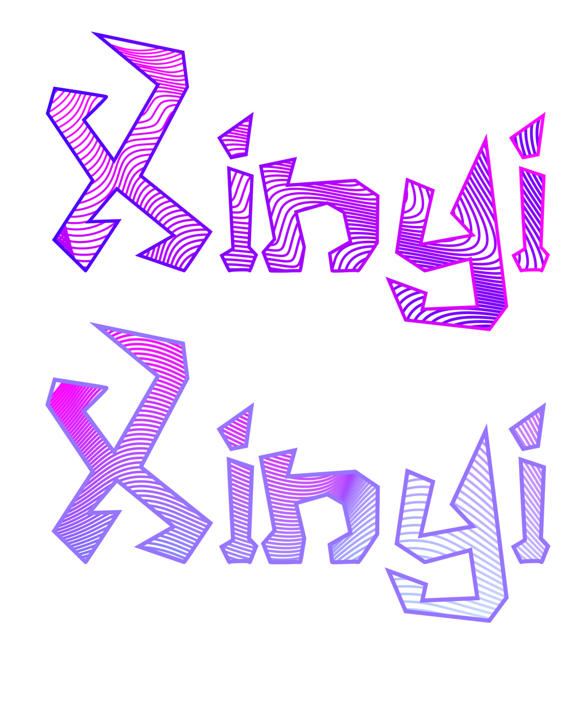
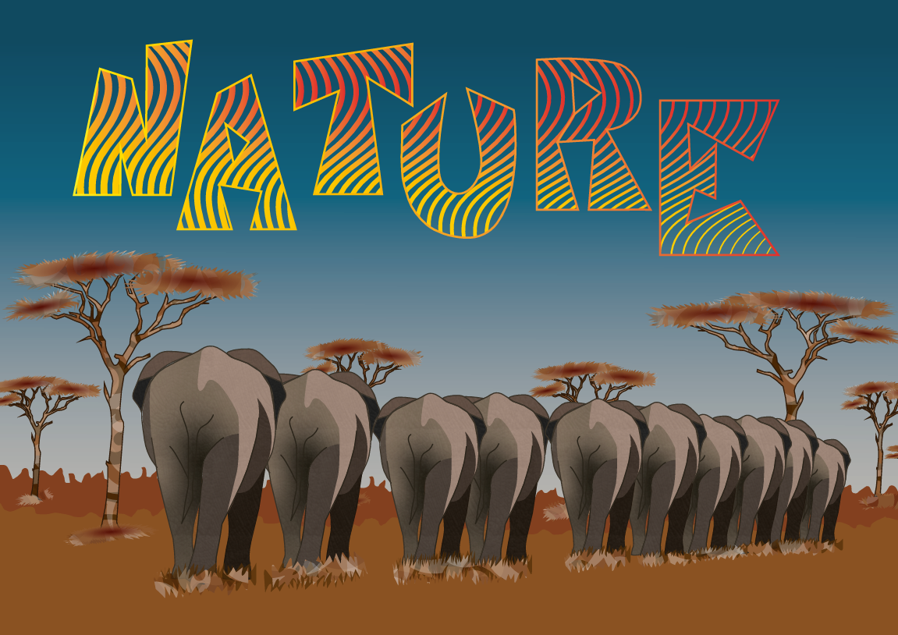
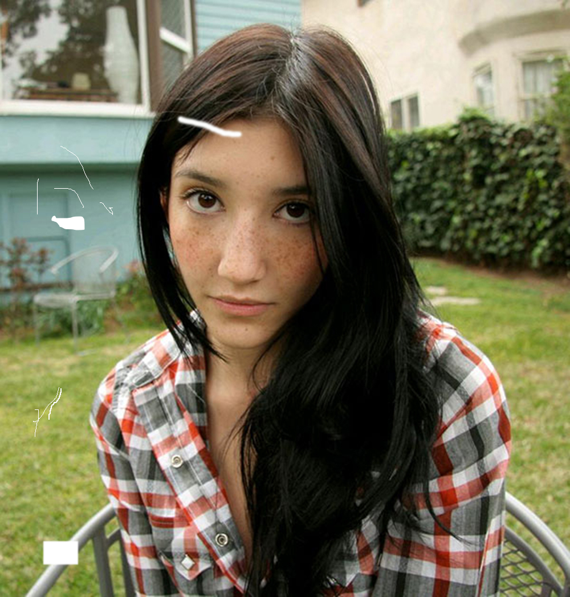
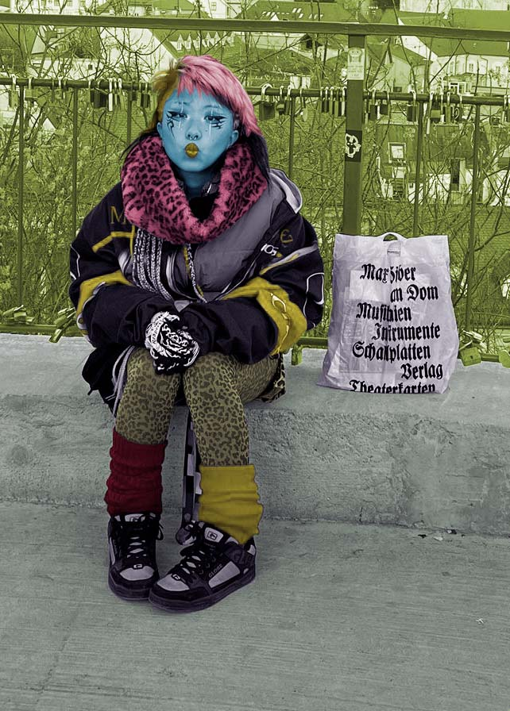
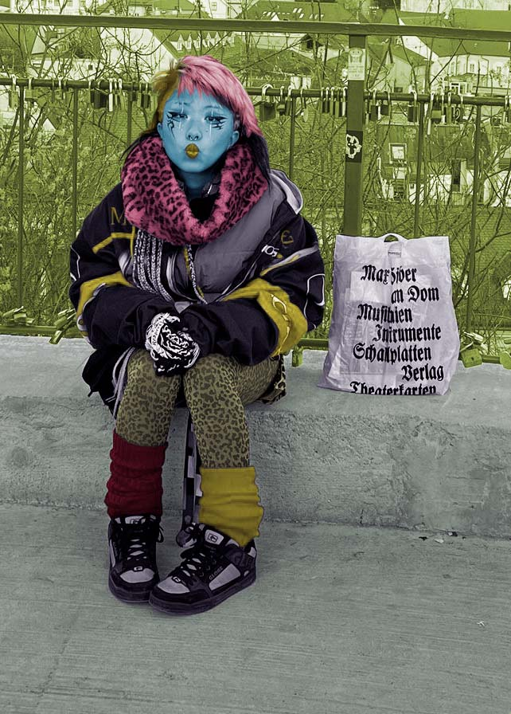

Exercise 1 was created with FontForge, creating a new personalized typography. Then in the second exercise the same typography was used in Illustrator using the blend tool.
For exercise 3, he flower was traced on top of a picture then edited until satisfaction, the background is a personalized motive.
Exercise 4 was an inspiration with tribal esthetics and colors being mixed to highlight the doberman in the middle.
For this first project, the was was to trace an image and add all of the different elements found in the picture, also adding a personalized text with curves inside.
This exercise showcases the use of the cloning stamp to help fix damaged images with digital retouching techniques.
On exercise 6 the purpose was to recolour black and white images by making channel selections and changing the colour accordingly.

 

For this exercise, I needed to collage different elemtents into a base picture making it blend in. The blended elements are the dacing girl, the shark, a cat napping in the base of the tree, the trees in the background and the traffic sign.
Everything done in the previous exercises come down to this collage. Digital retouching techniques were used, colorizations, filters, channel selections, masks, etc.
This is a cinemagraph created with Adobe Premiere Pro.